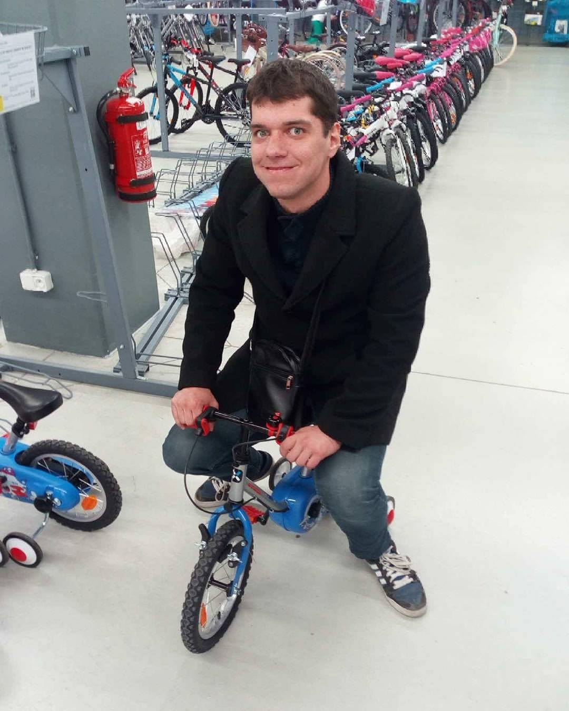

About us
Bloodnation is a platform for people that want to be, or already are blood donors and for people that are
in a need for blood.
We've seen horrible news, about hospitals that will not do surgeries because of lack
of blood for the patient. In this case the family of the patient reaches out to local and social media
begging other people for help. This action causes a delay, a delay that not many people have the luxury
for. If only there was something to be done about it...
With the help of Bloodnation, hospitals will have a more reliable source of blood, so the patients
will have the maximum chances of survival. It's job is very simple - find blood donors when they are and
also when they aren't needed
